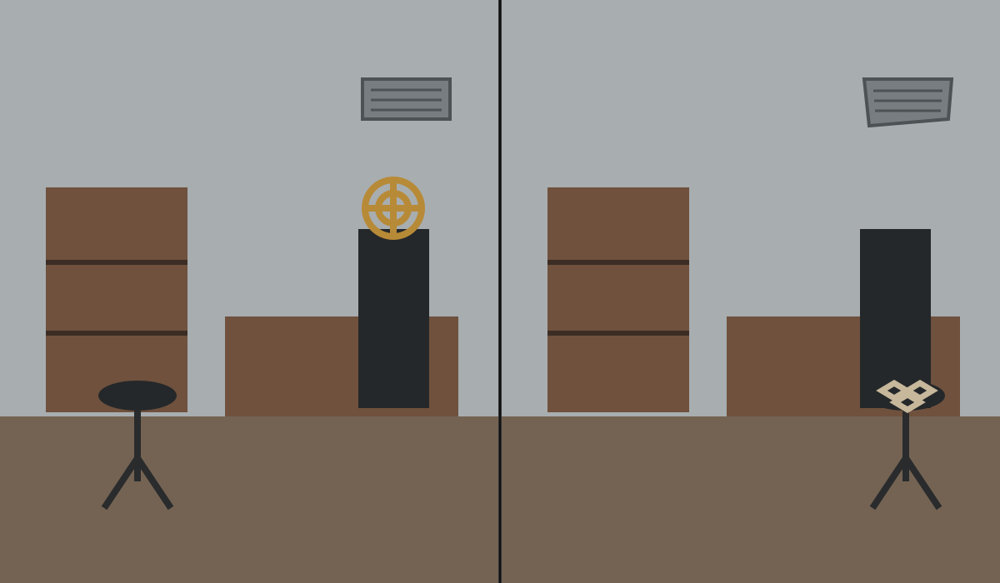
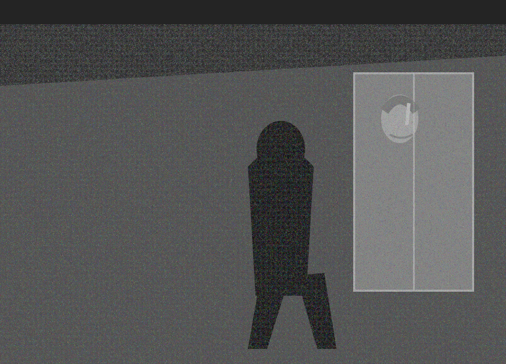
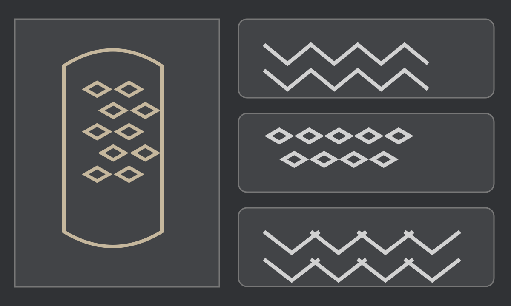

Easy · 8–12 minutes · Theft/deception · Gore: None
This is a fictional DetectAIve locked mystery. Paste the Casefile into ChatGPT, then return here only when ChatGPT tells you to open a numbered evidence item.
OPEN RAW CASEFILEClipboard blocked? Use the raw Casefile link, Select All, Copy, then paste into ChatGPT.
Do not open an item until ChatGPT unlocks its ID.

Tap the image for the full-resolution asset.

Tap the image for the full-resolution asset.

Tap the image for the full-resolution asset.
If the button fails, load the text here and copy manually.